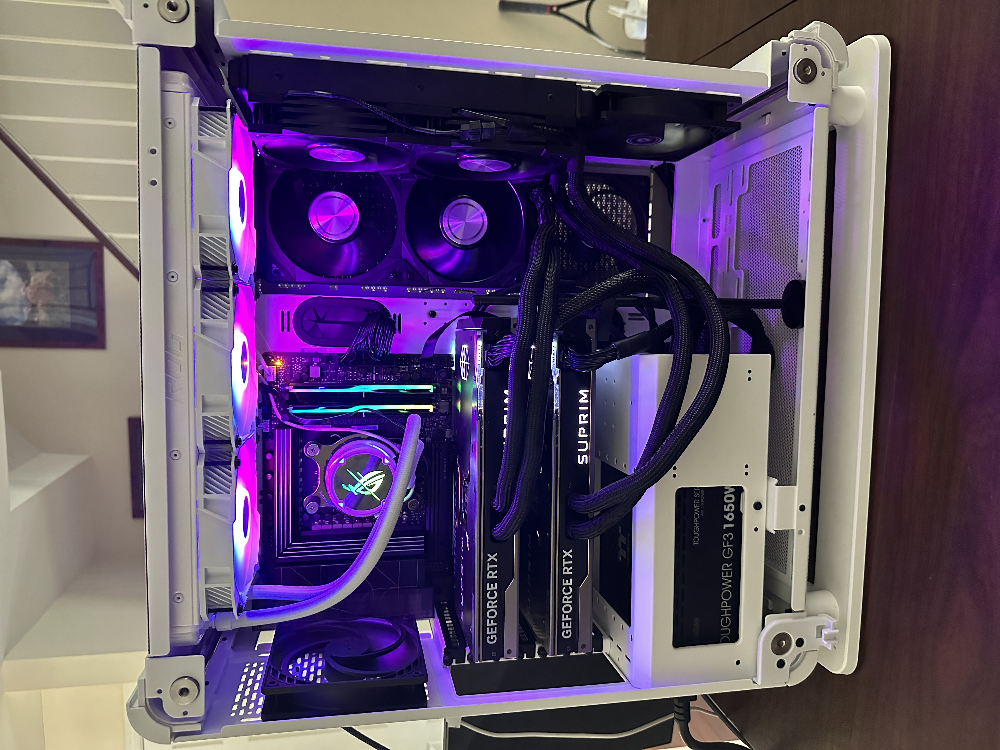

Building a dual 4090 rig under $6000
 One of my work machines, what I have deemed as the Workhorse, has quite the interesting build. After receiving a number of requests off of Twitter, this article will cover some part choices that I went with for a dual-4090 deep-learning based rig.
This build lands somewhere in the midrange-ish area (as much as 2x4090 can be “midrange”), and doesn’t contain anything that will blow you out of the water. (all-in-all around $6,000)
However, it is a build that has allowed me to train a few models, do debugging work with NVIDIA’s FP8 capability, and now test out the new Open Source Peer-To-Peer drivers that were recently released for the 4090’s.
This blog is organized first as just the parts list, then afterwards I go into detail about each area and talk about any problems I had around it.
Just give me the parts
No worries, if you’re just here for a parts list, here’s a link to the pcpartpicker
These prices are all from my local Micro Center, where all these parts were gathered from. Current values are based on prices on 04/14/2024 unless there is an *, in which case I couldn’t find it and am just listing the price bought at.
- CPU: AMD Ryzen 9 7900x ($399.99)
- Cooler: Lian Li Galahad II Trinity 360mm ($149.99)
- GPUs: 2x MSI SUPRIM LIQUID X 4090’s ($3879.98)
- Motherboard: Asus ProArt X670E-CREATOR ($459.99)
- RAM: 96GB, 2x G.Skill Trident Z5 RGB 96 DDR5-6800 CL34 ($369.99)
- PSU: Toughpower GF3 1650W Gold - TT Premium Edition ($269.99)
- M.2: Samsung 990 Pro 2TB ($189.99)
- Case: Thermaltake Core P6 ATX Mid Tower ($189.99)
Total: $5909.91
Parts Explained
The GPUs

The choice of these two particular 4090s was not by accident or a whim. While normal 4090’s are gigantic, these 4090’s take up the same 2-slot card width as older cards, and come with a free bonus of liquid cooling. And it works.
Highest temps I could get it to for me was 63C under a heavy load (100% volidity) running for about 10-15 minutes or so during the stress test. Remarkably efficient to say the least.
Now those radiators make it… interesting in picking a case, which I’ll dive into a bit later, however with the 2-slot card height you can still get away with a mid tower!
The CPU & Cooler
For CPU I went for the AMD Ryzen 9 7900x. There’s a few reasons I went for this:
- I couldn’t do a threadripper, which would have been $1000+ vs ~400
- I knew I wanted to stay in AMD, their CPUs are good and outcompete the rest, even if other competitors have many more compatible boards
If I had to do this again, I’d maybe do the Ryzen 9 7950x3d which you can find for ~$150-200 more right now as I could make full use of 192 GB of RAM.
For the cooler, I just enjoy the RGB :P
And since the GPUs are already liquid-cooled, it just made sense to make it as well.
The Motherboard
Here comes the… fun part of this build. Finding a compatible motherboard was not an entertaining adventure.
I first went with a MSI MAG x670E Tomahawk ATX board, knowing that it had a single x16 lane and the rest were x4, meaning my build would be limited by that x4 lane. Simply because since we didn’t have Peer-to-Peer support, it was a tradeoff that could go well.
Then, the weight of the 4090’s broke one of the lower brackets, and I had to get a GPU support bracket.
Come to today, now we have a custom driver which added P2P support, and my GPUs were looking hungry.
The new motherboard of choice is a Asus ProArt X670E-Creator ATX motherboard:

In my opinion, the ProArt boards are some of the best I’ve ever encountered. They’re designed to give you an 8x/8x split on PCIE lanes when running two GPUs, come fashioned with helpful design choices such as:
- A button to release the top GPU from the PCIE, instead of pushing down the side which can break easily and is almost impossible to reach with multiple-GPUs
- The peripherals come with a riser-accessory which clearly states what each pin goes to (e.g. power button, etc)
One thing to note, if you look up online, you’ll see it supports 192gb RAM, and you may see that the RAM I chose here is not compatible with the board!
A latter BIOS update provided compatibility with more 48gb RAM chips, allowing you to keep that DDR5 dual-RAM efficiency without needing to use 4 cards to hit that 2x GB RAM per 1x GB vRAM threshold.
When putting everything together, I found I didn’t need to manually update the BIOS and it just worked “out of the box,” but milage may vary.
The RAM

For RAM, I knew I wanted to follow the at least 2x GB RAM per 1x GB vRAM as mentioned earlier, and since the MB could support that in two slots, I chose to do 2x 48GB.
It’s DDR5 though, which is not cheap sadly.
I did eventually go with 4x GB ram per 1x GB vRAM, as I found I needed this to train Llama-3-8B while doing offloading.
While the 192 GB of RAM in the 4 chips is great, the CPU only supports 128 GB of RAM. Eventually I will need to upgrade to the 7950x3d, however for now I’m okay with this “unusable” RAM with wiggle-room to increase in the future.
PSU
I went with the Toughpower GF3 1650W Gold - TT Premium Edition for the PSU
The super handy part about this PSU is they come with a power adapter for the 4090’s! No need to risk a house fire trying to carefully bend the cables the right way, just use a single one directly from the PSU to the GPU!

The Case
Finally, the case.
This was an interesting challenge, as we essentially had to account for:
- 1x radiator coming from the CPU cooler
- 2x radiators coming from the GPUs
- Enough space to house the 4090’s (I’m not using riser cables)
This landed on the Thermaltake Core P6 ATX Mid Tower, which in my opinion is a beautiful case.
It houses every part with ease, and even has enough room to include some outtake fans under each GPU’s radiator:

One thing a bit annoying with this case is unless you move the cables perfectly, that bottom dust cover will keep coming down when you move stuff inside the PC. Annoying, but not the end of the world.
Concluding thoughts
All-in-all this is a sub-$6000 dual-4090 Deep Learning rig. You can still make decent use of them, without having to blow your budget.
It’s been quite a fun time tinkering with and learning about this build over the last 5 months, and overall I do think it’s worth it from that perspective.
However: If I had the choice to do it all over again, I would not go with 4090’s and instead get some Quadros (if you can find them). Lower power and equal (if not higher) performance.
For example, it’s been said that Quadro cards with 7800 CUDA cores will outperform a gaming GPU with 11000 CUDA cores by easily 10-25%.
Not to mention, we now are losing capabilities like NVLink, and are relying on hacking into their CUDA drivers to even get Peer-to-Peer support going.
For an example alternative, my local microcenter sells some older-gen (so doesn’t have FP8 support) PNY RTX A4500 20GB cards for $1,499.99. At about 1:1 the price, if you can withstand not having FP8 it could be a better option. (Or especially if you can find the new gen A4500’s, which do support FP8).
Otherwise, I hope you were able to learn something out of my adventures detailed here. PC building is a fun (but sometimes difficult) hobby/thing to do, and most of the time it’s a 20:1 research-to-building-the-thing time. Good luck, and let me know if this inspires you to make any builds! (Or tweak your current ones)